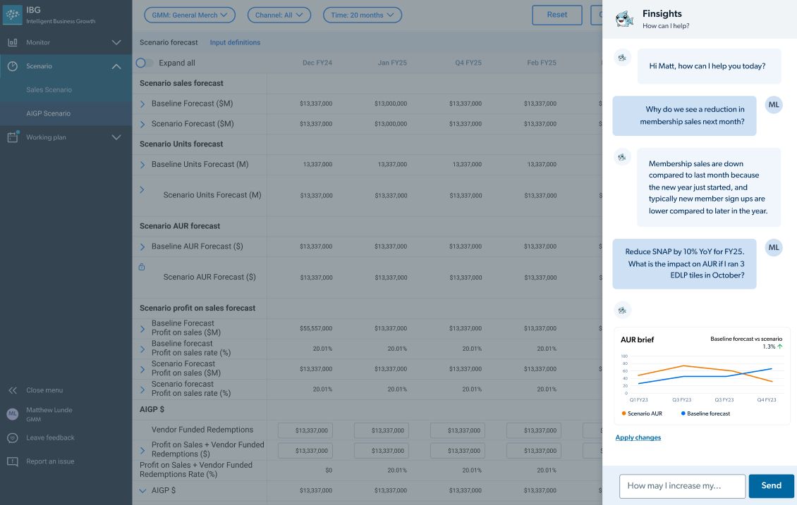
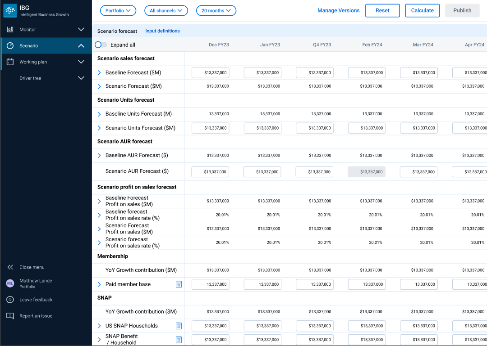
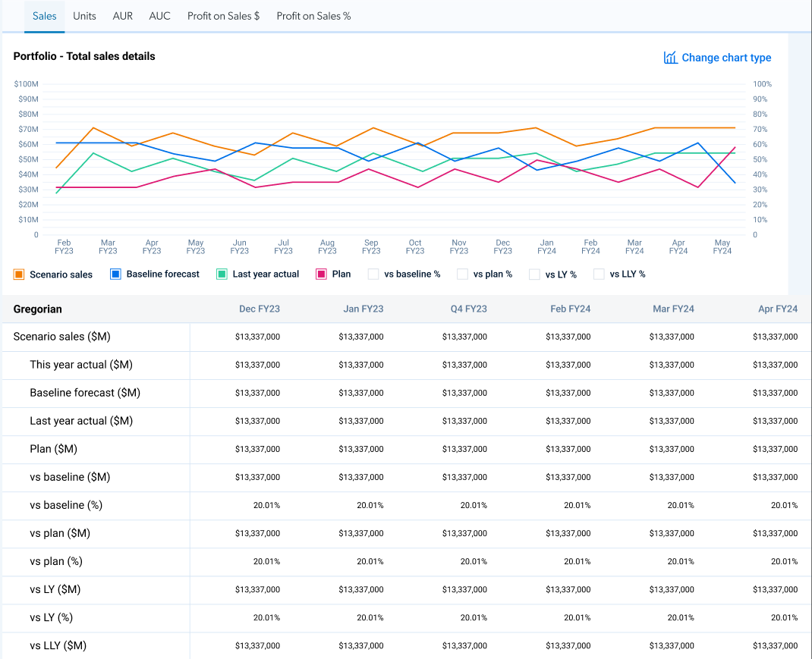

Key Features
Prioritized features delivering immediate business value and competitive advantage

Unified P&L Dashboard
Executive-level product feature consolidating 12+ data sources into single real-time view. Prioritized #1 for immediate business impact on decision velocity.

AI-Powered Forecasting
ML product capability reducing forecast variance 30% and saving 800+ hours/year. Differentiated feature creating competitive moat vs. legacy tools.

Scenario Planning
Strategic planning tool enabling executives to model market scenarios in minutes vs. weeks. Drove 60% faster planning cycles and increased strategic agility.

Collaborative Workflows
Cross-functional product feature breaking down silos between finance, operations, and merchandising. Enabled 100% org adoption through network effects.